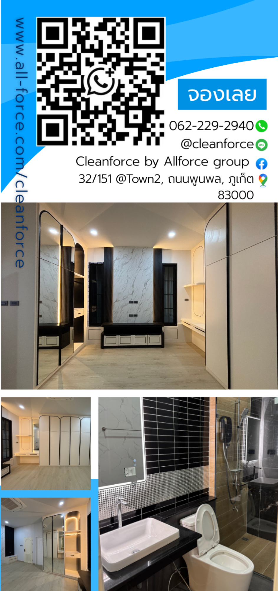
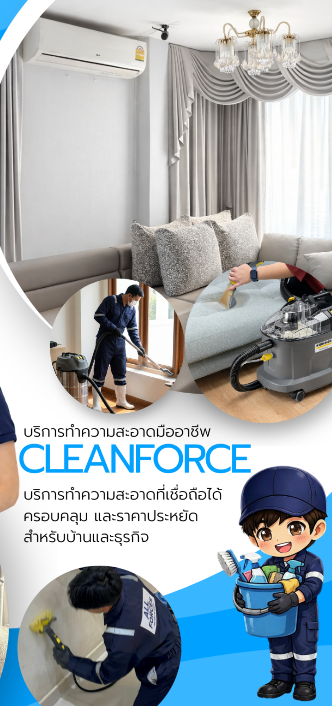
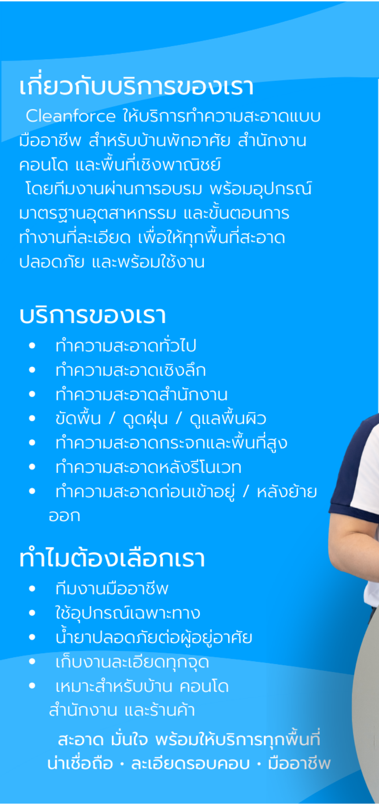

กำลังเตรียมแผ่นพับ...



🖱️ ซ้ายหมุน 3D | 👆 คลิกพับกระดาษ
🔍 เลื่อนลูกกลิ้งซูม | 🖱️ ขวาลากเพื่อเลื่อน (Pan)
🔄 รีเซ็ตมุมมอง
📖 ดูหน้าเต็ม (2D)
✖
หน้าปก
หลังหน้าปก
หน้ากลางด้านใน
หน้าหลังด้านใน
หน้ากลางด้านหลัง
หน้าสุดท้ายด้านหลัง